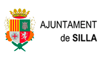
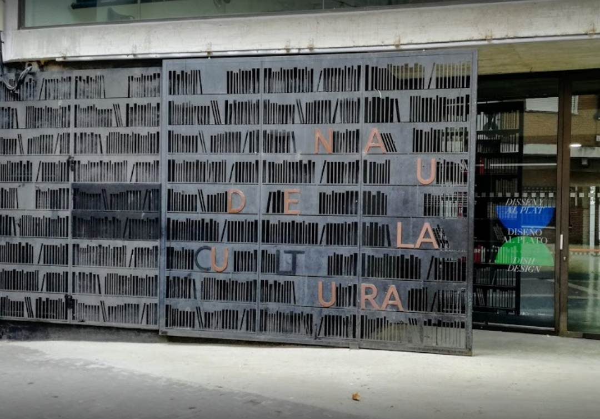

Agenda:

- Col·loqui: L'ecologia de l'Horta de València. 27/10
- Xerrada: Els horts urbans i el seu impacte ambiental. 28/10
- Taller: Disseny i creació d'un mini hort a casa. 29/10
Associació Per l'Horta i Ajuntament de Silla
La Nau de la Cultura, Silla, València
